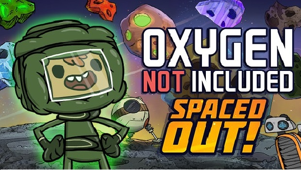
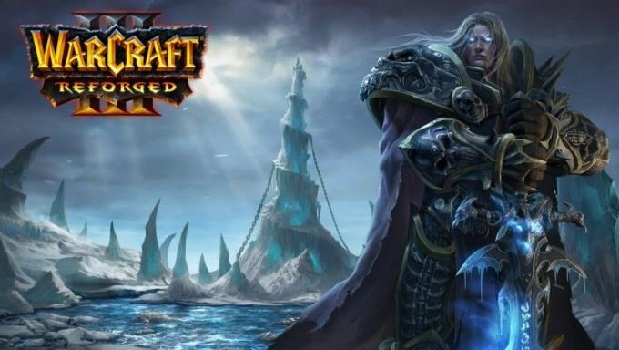
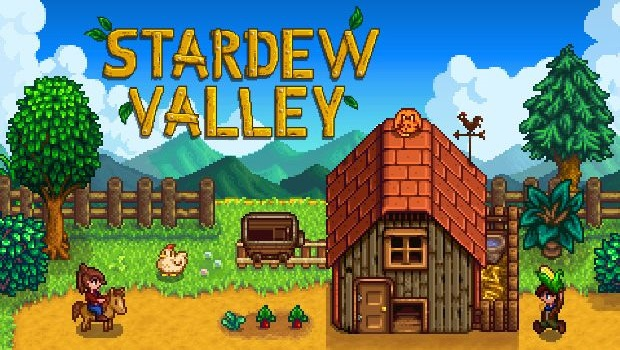

-

Es un juego de simulación de espacio-colonia. Administre a sus colonos y ayúdeles
a cavar, construir y mantener una base de asteroides subterráneos. Necesitará
agua, calor, comida y oxígeno para mantenerlos vivos, e incluso más que eso para
mantenerlos felices.
-

Es una remasterización que mejora los gráficos del videojuego de Blizzard con
nuevos modelados para personajes y edificios, así como escenarios más coloridos
y detallados. Esta versión incluye todos los contenidos del juego original, Reign of
Chaos, además de su expansión The Frozen Throne, que en su día amplió la
experiencia con nuevas misiones de historia y nuevas unidades para los ejércitos
de la Horda, Alianza, Elfos de la Noche y no-muertos.
-

Es un juego de simulación donde heredas la vieja granja de tu abuelo. Aquí
comenzarás una nueva vida con una granja desvencijada que tiene pocas
herramientas y unas pocas monedas. Podras diseñar la granja como quieras,
planear qué comprarás o qué cosecharás cada estación del año… Te emocionarás
plantando, una acción que antaño creías que era aburrida. Teniendo en cuenta
que esta parte es la central del juego, me alegra decir que es agradable y divertida.
-

Despierta siendo un vampiro. Sal en busca de sangre para recuperar tus fuerzas y
evade la abrasadora luz solar para sobrevivir. Alza tu castillo y progresa en un
mundo abierto lleno de misterios que cambia constantemente Gana aliados en
línea y conquista las tierras de los vivos.
-